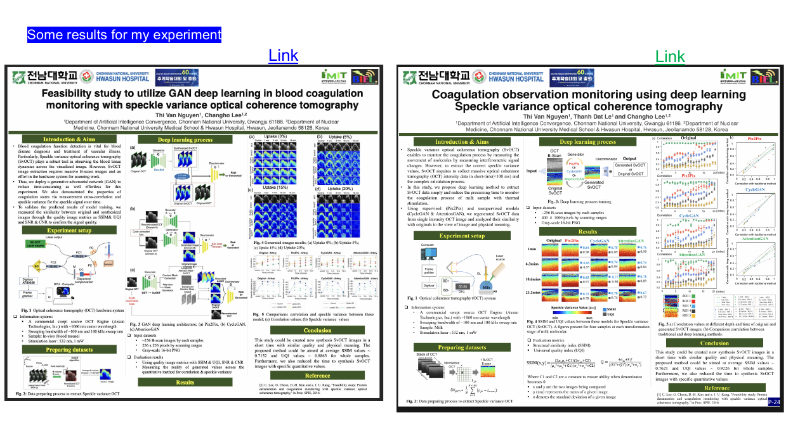

Feasibility study to utilize GAN deep learning in blood coagulation monitoring with SvOCT
Thi Van Nguyen and Changho Lee. GAN-based image synthesis using Pix2Pix, CycleGAN and AttentionGAN.
Download poster image ↗Scientific communication
Selected scientific communication from biomedical optical imaging research. Click any image to view it at full resolution.
Thi Van Nguyen and Changho Lee. GAN-based image synthesis using Pix2Pix, CycleGAN and AttentionGAN.
Download poster image ↗
Portfolio reproduction of two scientific posters. Refer to the original poster or CV for author and presentation details.
Download poster overview ↗My CV lists an oral presentation on coagulation observation monitoring at the Annual Meeting of ARCCNM–KSNM and a poster presentation on GAN-based coagulation monitoring at the Korean Society of Medical & Biological Engineering. Conference details and external links will be added when verified.
These images are author-provided research materials. Results are reported as shown in the posters and are not independent clinical validation.